| mission meet the staff travel after party awards faq contact us |
| pressroom photo gallery |
| volunteer sponsors |
| 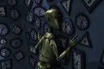 |
Dissonance (Animation) Sheryasi Das Synopsis: “There is music in perfection." Dissonance is a 3D animated film about a robot in a room full of clocks, trying to maintain order. Website Other Works |
| 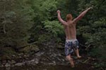 | Hindsight (Documentary) Sean Hanley Synopsis: Hindsight is a documentary portrait of the seasonal rituals of a small town in New England. Shot over the course of a year, the film acts as a visual and aural eulogy for the place the filmmaker once called home. Resume Website Twitter |
 |
Out Of The Blue (Documentary) Matt Stamm Synopsis: This documentary sheds light on the unsettling occurrence of beached dolphins and the people who work to rehabilitate them. Website LinkedIn |
| 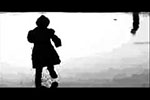 |
Baptism (Experimental) Michelle Byron & Jacob Mertens Synopsis: A found footage experimental film that explores the abstract beauty of baptism, a process in which we return to a state of creation when all life is unified. Website Film International |
| Protocol Of A Person (Animation) Walter Lowe Synopsis: An animated narrative exploring shifts in personality and the forces that shape our outward appearance. Website Vimeo |
|
| 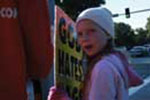 | The Elect (Documentary) Erin Zaeck Synopsis: The Elect is a short cinema verite- style documentary that follows members of the controversial Westboro Baptist Church as they carry out their everyday lives. Vimeo LinkedIn |
| 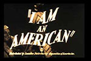 | I'm An American (Experimental) Kyle Rodgers Synopsis: A 16mm found footage film exploring the lives of everyday Americans. Vimeo |
| 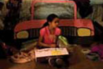 | Jemila's Tale (Drama, Family) Christina Bryant Synopsis: A young black girl discovers there are no princesses like her in fairytales, so she decides to write her own as she struggles to communicate with her classmates and father after the loss of her mother. Wordpress Vimeo |
| 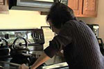 | Body Of Work (Documentary) Gabby Follett Synopsis: Few people have the joyful determination embodied by Betty Dwyer as she uses her paintbrush and positive attitude to take on a world of adversity. Website Vimeo |
| 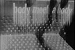 | Man Is Always On The Stairs (Experimental) Jing Niu Synopsis:A child climbs stairs to find a vast field inhabited by humans whose roaming, naked bodies appear and disappear within the dark night and the shadows of tall hay stalks. A poetic rhythm of light, celluloid and nihilism. |
| 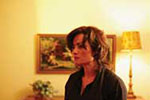 | Coup Sauvage (Drama) Stephane Moukarzel Synopsis: After a traumatic accident, a mother's grief alters her perception of her surroundings in this cerebral film. Vimeo |
| 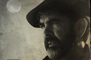 | Zuretzako Javi Zubizarreta Synopsis: The story of a Basque men,Joaquin ,who leaves for the US to work as a sheep herder to provide a better life for his family. A tough and lonely life that he refuses to let his son endure and that he has done for too long. Website |
| 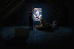 | The Birds Upstairs (Animation) Christopher Jarvis Synopsis: Frustrated attempts to conceive children overwhelm the lives of an aristocratic , avian couple in the early nineteenth century. Website |
To report a problem with site functionality, please contact the webmaster.
Copyright 2012 Visions Film Festival & Conference